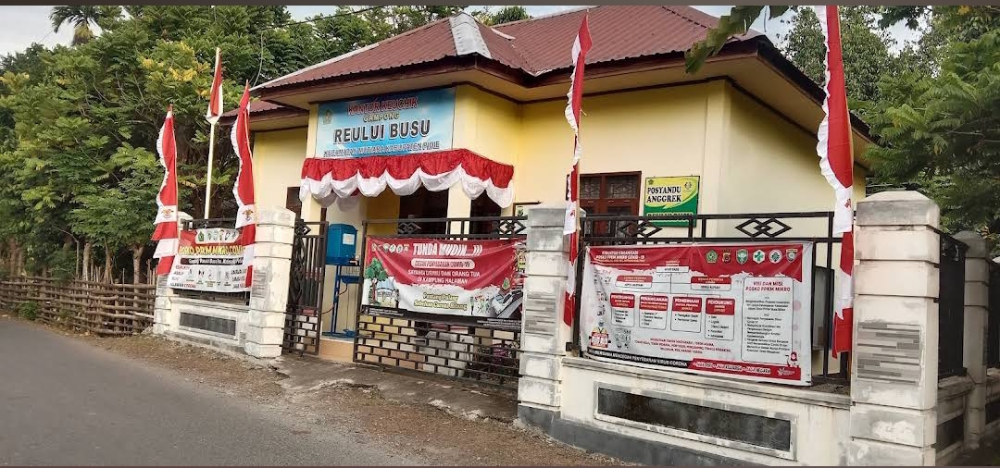
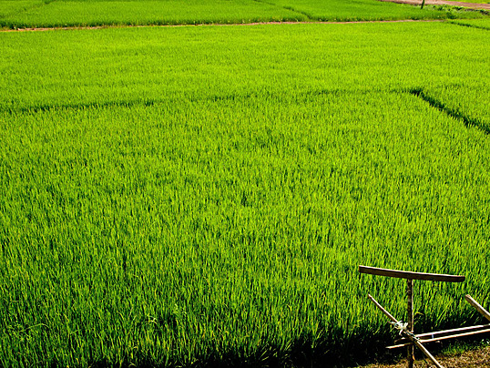
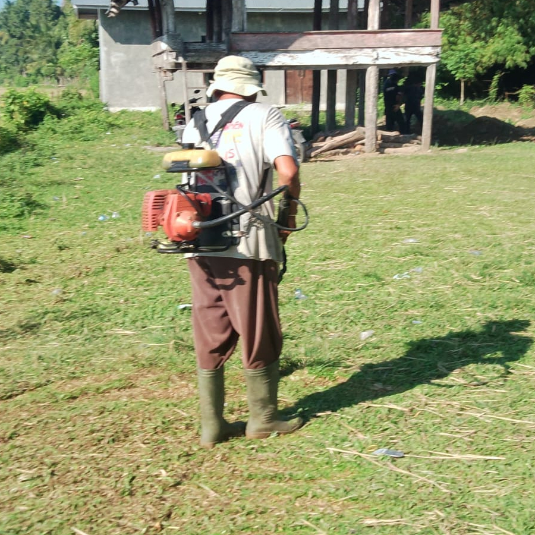
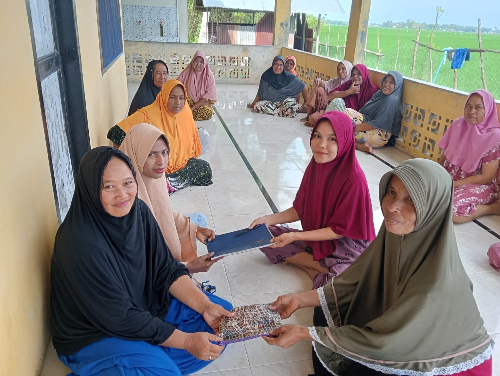
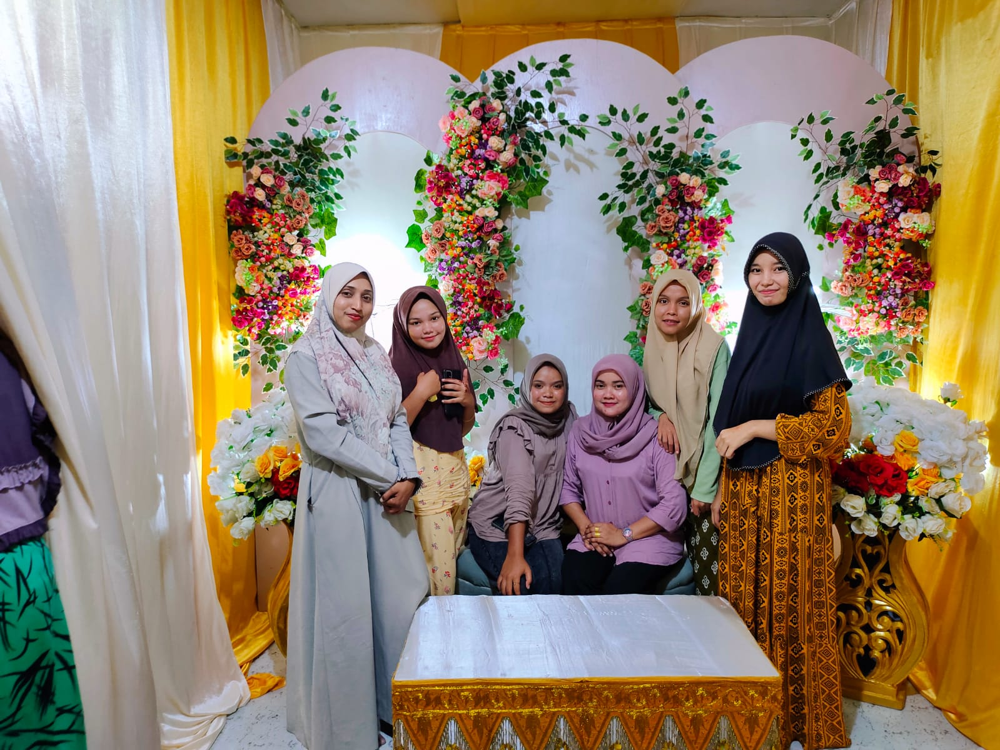
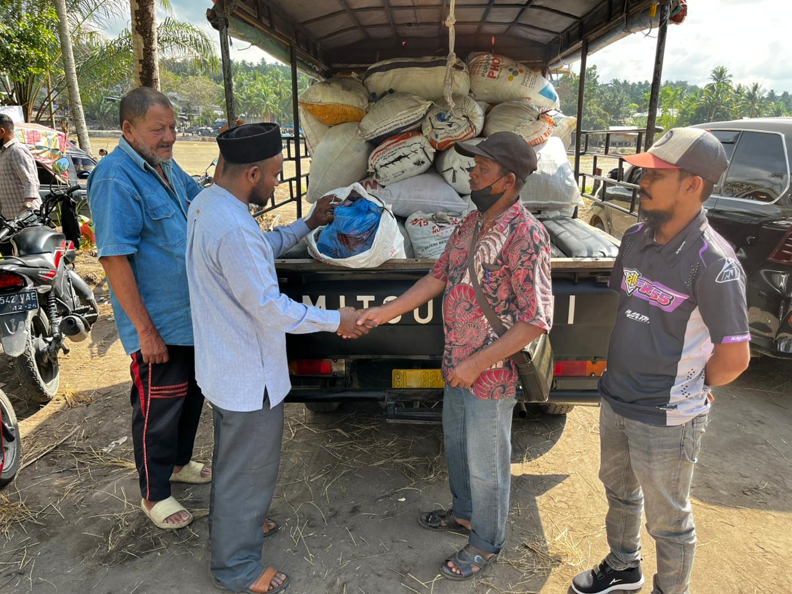
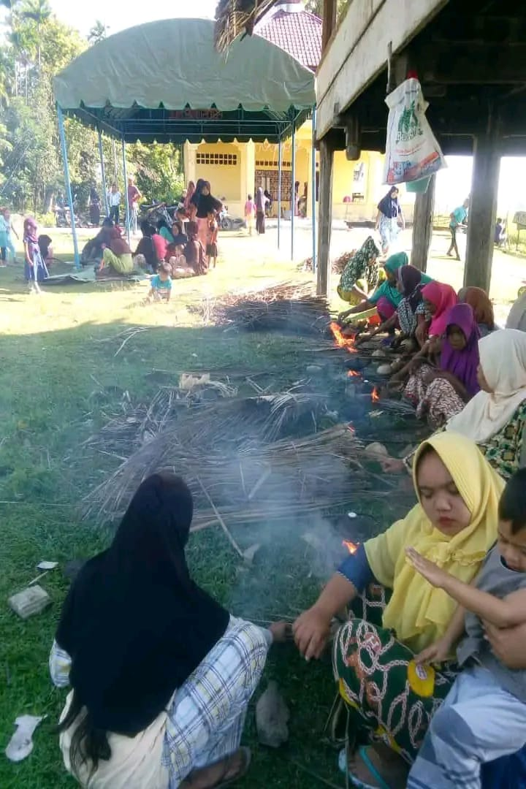

Perjalanan panjang Busu dari masa ke masa
Busu merupakan salah satu kawasan (kemukiman) yang terdiri dari beberapa desa (gampong) di Kecamatan Mutiara, Kabupaten Pidie, Aceh.
Ada dua versi tentang asal-usul Busu yaitu:
Asal Nama: Nama "Busu" diambil dari nama seorang tokoh ulama pendakwah bernama Syarif Ahmad bin Muhammad bin Ali, yang lebih dikenal sebagai Syarif Ahmad Busu.
Pusat Dakwah: Busu dahulu merupakan pusat dakwah yang signifikan, ditandai dengan adanya lembaga pendidikan bernama Busu Dayah Syarif di Kecamatan Mutiara Saat ini, warisan pendidikan tersebut berlanjut melalui lembaga seperti Yayasan Dayah Thauthiatul Abraar Busu di Gampong Reului Busu, yang mengelola pendidikan formal mulai dari tingkat menengah (SMA)., Pidie.
Keturunan: Keturunan dari Syarif Ahmad Busu tersebar luas, tidak hanya di Pidie dan wilayah Aceh lainnya, tetapi juga hingga ke Malaysia dan Singapura.
Kedua versi ini mencerminkan bagaimana masyarakat setempat memahami dan menginterpretasikan asal-usul nama Busu berdasarkan cerita lisan.
Struktur pemerintahan Desa Sukamaju periode 2020–2026
Arah dan tujuan pembangunan Desa Reului Busu
"Terwujudnya Desa Reului Busu yang Maju, Mandiri, Sejahtera, dan Berkeadilan Berlandaskan Nilai-nilai Gotong Royong pada Tahun 2026"
Data kependudukan dan profil wilayah Reului Busu
Aktivitas dan dokumentasi kegiatan Desa Sukamaju

📅 15 April 2026 · Dusun Mee Lueng BintangKegiatan ini sudah menjadi hal yang lumrah di lakukan di busu, tidak hanya wanita saja para laki-laki juga ikut serta dalam kegiatan ini biasanya para masyarakat akan membagi tugas masing-masing misalnya para anak gadis akan membantu di dalam rumah dan para laki-laki akan membantu di luar rumah. Ini adalah salah satu bentuk kebersamaan yang kuat di antara warga desa .

📅 11 Desember 2025 · Teupin Mane.Kegiatan penyerahan bantuan untuk korban banjir bandang 2025 ini dilaksanakan dengan kerjasama antara perangkat desa dan masyarakat yang di tempat maupun yang merantau. Bantuan yang diserahkan meliputi kebutuhan pokok, pakaian, dan kebutuhan lainnya.
Dokumentasi ini bertujuan untuk memberikan transparansi kepada masyarakat tentang bantuan yang telah disalurkan serta sebagai bentuk pertanggungjawaban kepada para donatur yang telah memberikan bantuan untuk korban banjir bandang 2025. Dokumentasi ini juga dapat digunakan sebagai bahan evaluasi untuk meningkatkan efektivitas penyaluran bantuan di masa yang akan datang.

📅 13 januari 2025 · Dusun mee lueng bintang.Kegiatan membuat apam ini dilaksanakan sebagai bentuk kegiatan sosial dan kebersamaan di antara warga desa. Kegiatan ini bertujuan untuk memperkuat tali silaturahmi dan memperkenalkan tradisi kuliner lokal kepada generasi muda. Selain itu, kegiatan ini juga dapat menjadi ajang untuk berbagi resep dan teknik pembuatan apam yang telah diwariskan secara turun-temurun di desa.
Hubungi kami atau kunjungi Kantor Desa Sukamaju